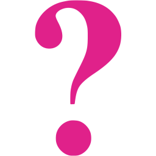

{% extends "layout.html" %}
{% block content %}
<h3>Session Results</h3>
<h5> {{ results[-1][0][0] }} -- {{ results[-1][0][2] }} -- {{ results[-1][0][1] }} </h5>
<table class="table table-striped sortable">
    <tr>
        <th>Tool Name</th>
        <th>File Name</th>
        <th>Details</th>
        <th>Status</th>
    </tr>
    {% for row in results[:-1] %}
    <tr>
        <td> {{ row[2] }} </td>
        <td> {{ row[3] }} </td>
        <td> {{ row[5] }} </td>
        {% if row[4] == 1 %}
            <td>  Pass</td>
        {% elif row[4] == 0 %}
            <td>  Failed</td>
        {% else %}
            <td>  Unknown</td>
        {% endif %}
    </tr>
    {% endfor %}
</table>
{% endblock %}